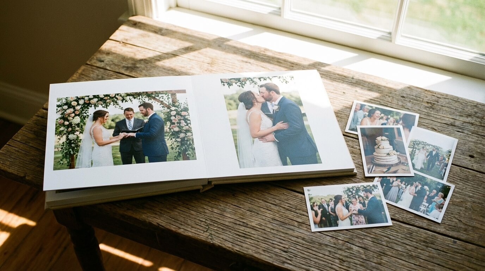

Uitgelicht
De romantische bruiloftstrends van 2026
Zachte tinten, verse bloemen en filmische fotografie — dit zijn de trends die dit jaar de boventoon voeren bij bruidsparen in heel Nederland.
Lees meer →


Loveshoot
De perfecte loveshoot: zo doe je dat
Tips om er ontspannen en naturel uit te zien.
Lees meer →
Album
Zo stel je het perfecte album samen
Kies de juiste foto's voor een tijdloos aandenken.
Lees meer →
Seizoenen
Lentebruiloft: fris en kleurrijk
Waarom lente het perfecte seizoen is voor uw trouwdag.
Lees meer →
Inspiratie
Intieme bruiloft: klein maar fijn
De voordelen van een bruiloft met een kleine groep.
Lees meer →